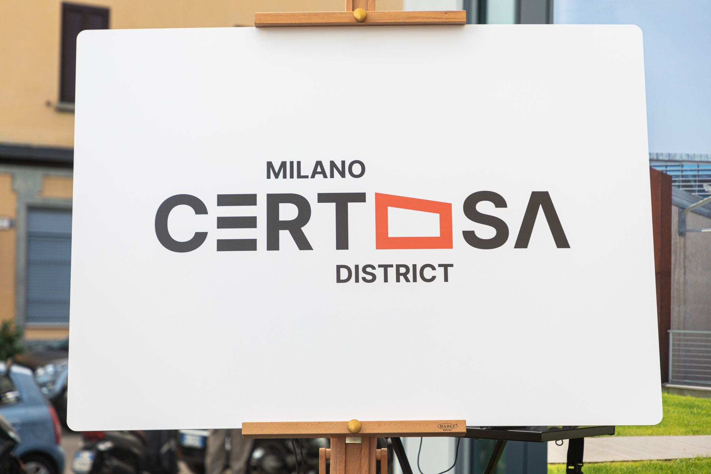
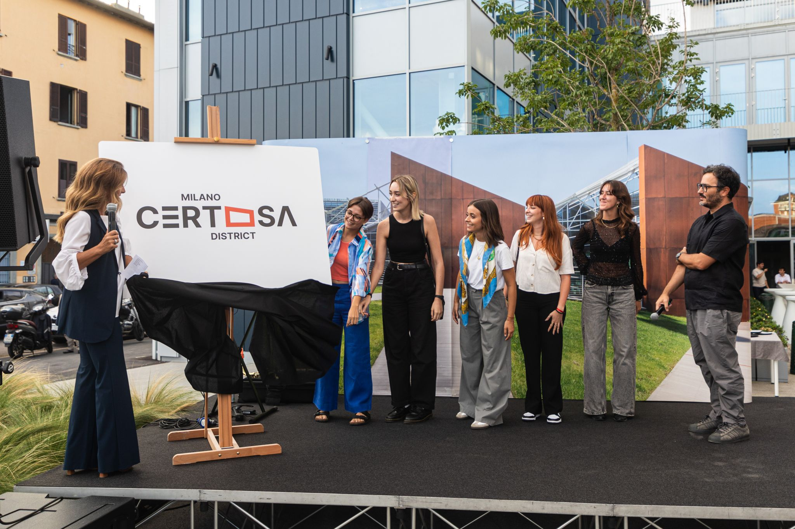
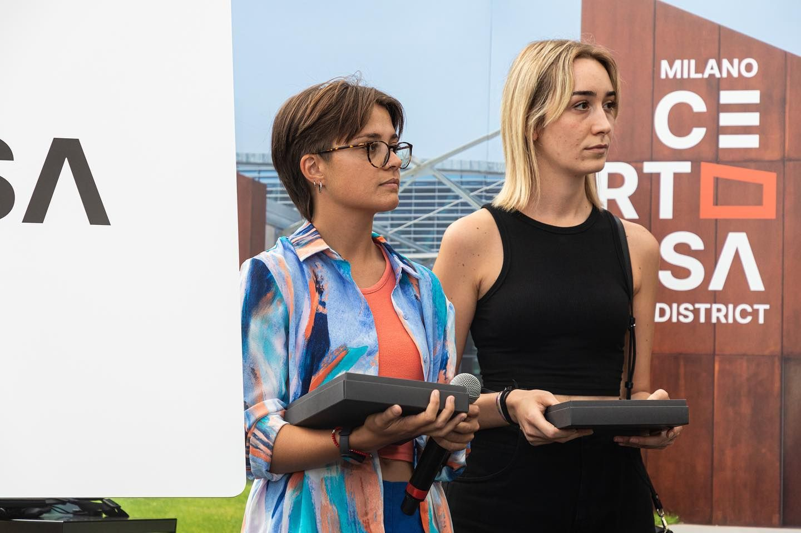
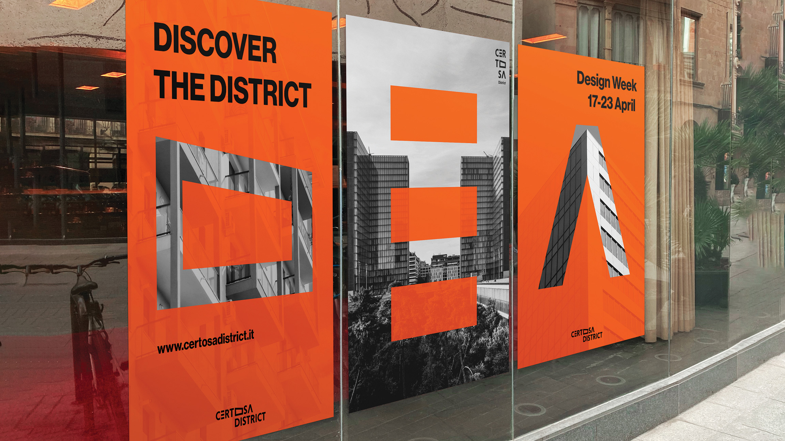
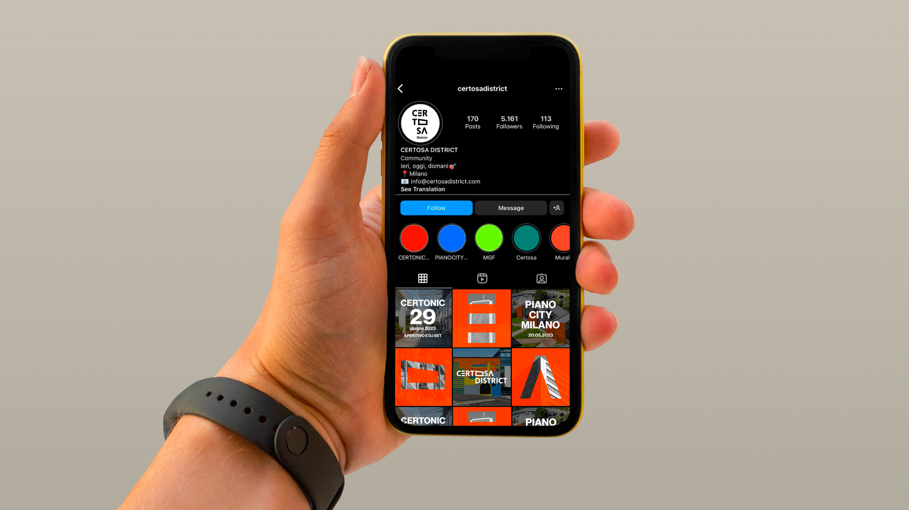

Certosa
2023 - @MilanoCertosaDistrict
2023 - @MilanoCertosaDistrict
Branding
Logo design
Logo design
Winner of the contest “Un nuovo logo per Certosa”
The Certosa District is a multifunctional area currently undergoing
redevelopment in the city of Milan. The goal of this project is to
create a new identity that focuses on the places and spaces that
define the district, ensuring that the area's unique character is
preserved while moving towards future development.

The logo was chosen for the originality of the idea, the
innovativeness of the graphic style, and the minimal and contemporary
design, and was considered the most suitable to represent the new
identity of the Milano Certosa District. It is in fact a graphically
flexible logotype, in which the letters themselves define and
communicate the district's essence and values.


Local connection
As part of this new identity, the logo design incorporates stylized
shapes representing the district's most frequented buildings. This
visual approach emphasizes the connection to the local community,
striking a balance between innovation and tradition, and ensuring the
neighborhood's essence is respected throughout the transformation.

Aesthetical features
The new logo retains the color depicting the district and focuses on
precise, clean lettering. Letters repurposed into building shapes
become defining symbols: they can be used individually and create a
unique language to distinguish the area.


Team
Alice Cupisti / Clara Di Bella / Martina La Macchia / Camilla Tosi / Ilaria Urgesi